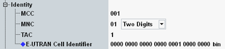

Identity Settings
This section configures identities of the simulated radio network. The values are transferred to the UE under test via broadcast.

Network identity settings
Specifies the three-digit mobile country code (MCC).
Remote command:Specifies the mobile network code (MNC). A two or three-digit MNC can be set.
Remote command:Specifies the tracking area code (TAC).
Remote command:Specifies the E-UTRAN cell identifier, unique within a PLMN. It is sent to the UE via broadcast and can be set independent of the physical cell ID (see "Physical Cell ID").
If you use carrier aggregation, configure different values for the carriers.
Remote command: